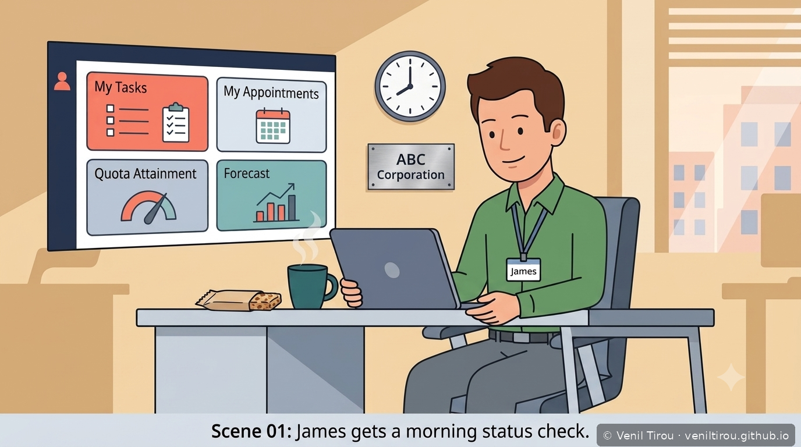
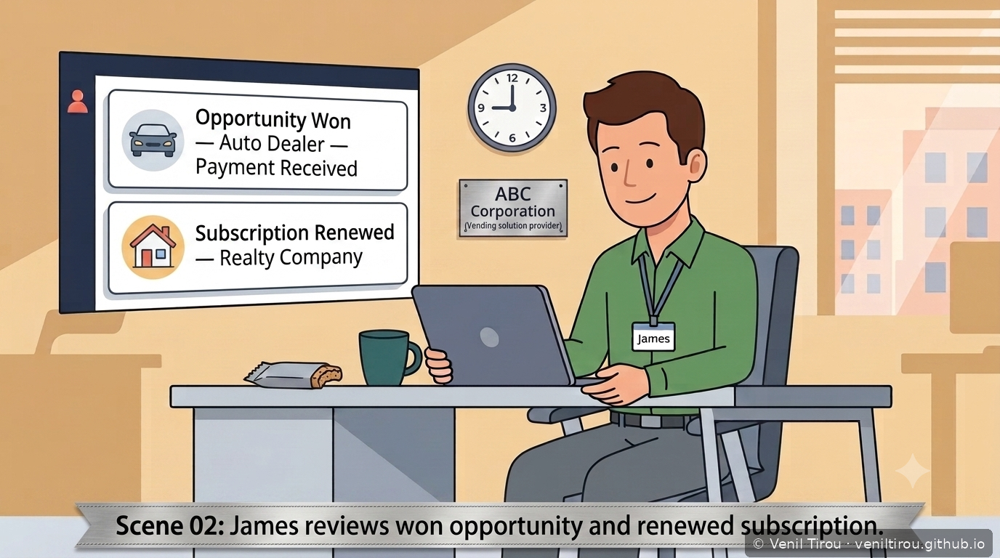
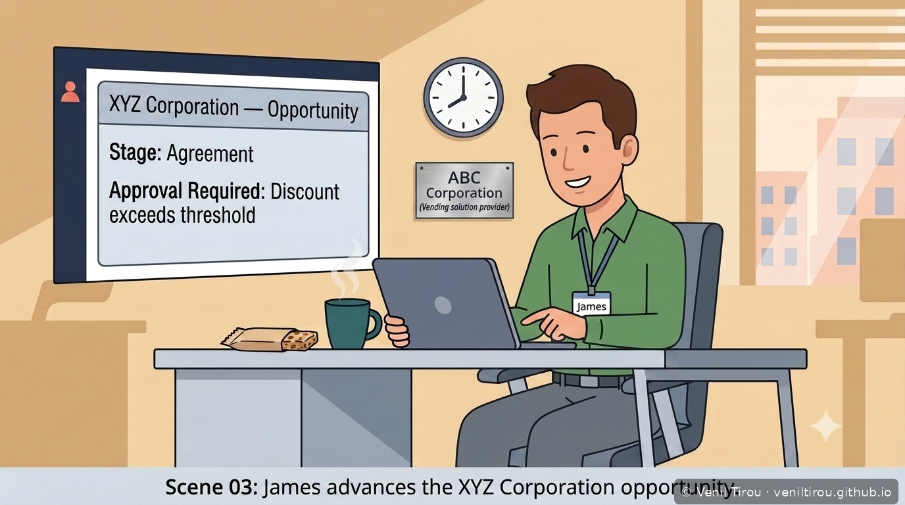
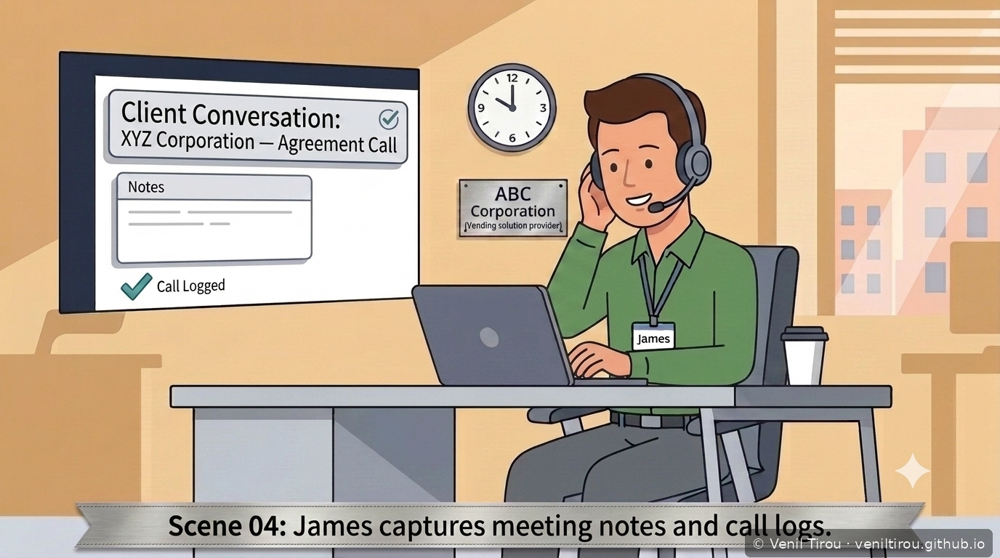
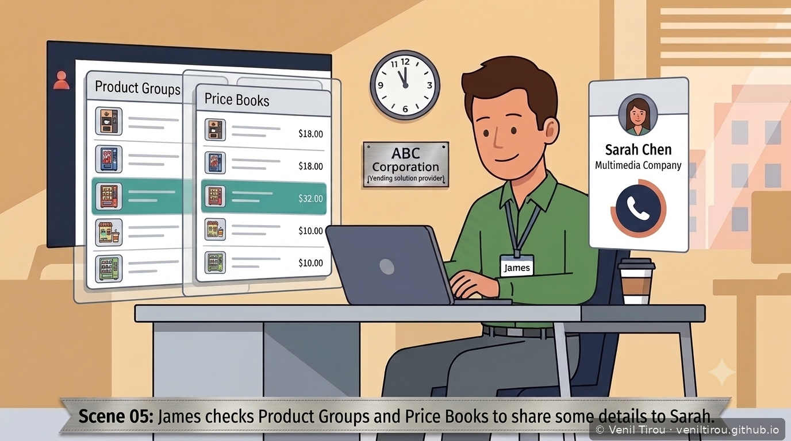
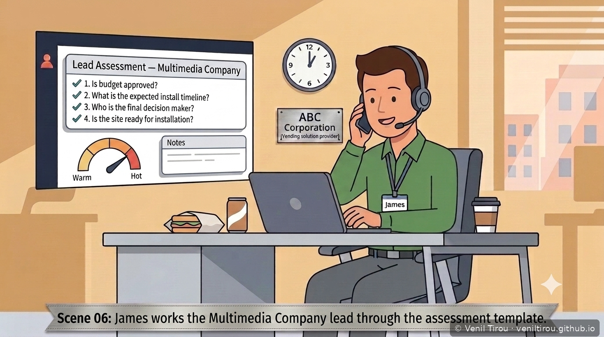
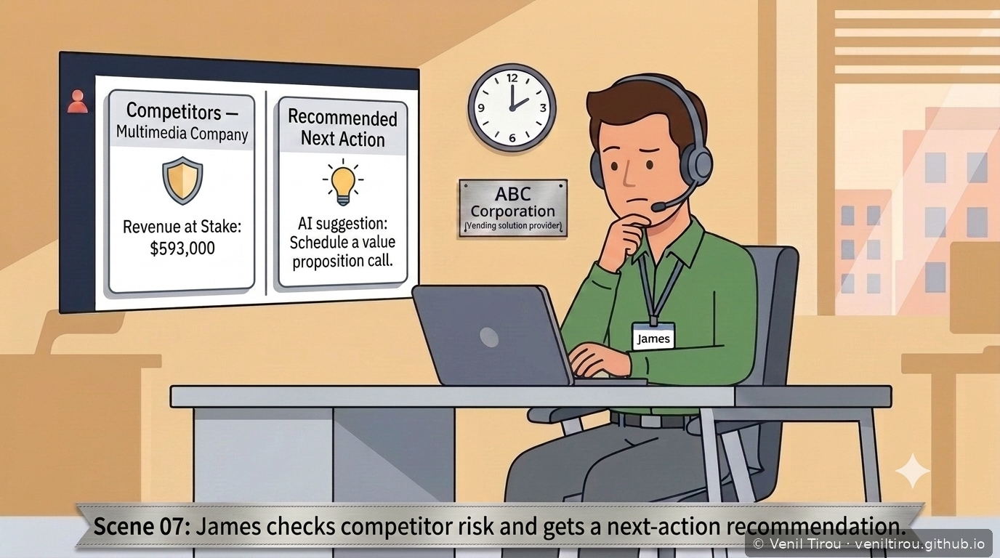
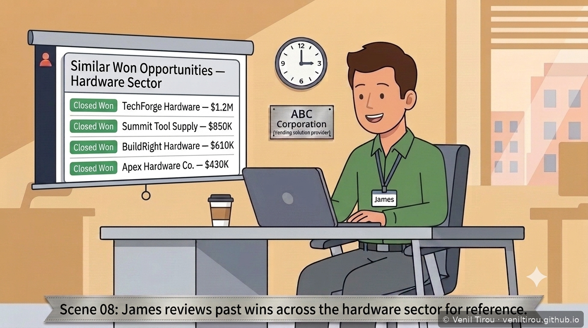
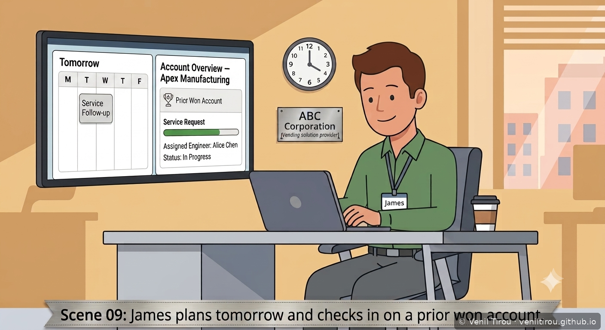
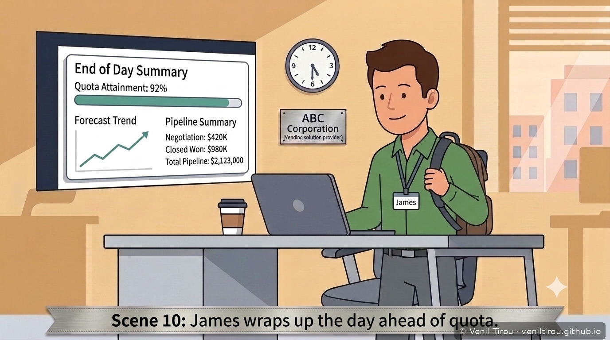

Business Scenario: Before any single deal becomes
the subject of its own chapter, it's one line on James's daily list.
This storyboard shows how James manages five deals across five
different industries in a single day — including his first touch on
an opportunity with XYZ Corporation, the same deal that becomes the
subject of Chapters 1 through 3.
👥 Characters in This Series
James (GREEN shirt) — Senior Sales Rep at ABC
Corporation, juggling multiple leads and opportunities in a single
day
Sarah Chen — Contact at Multimedia Company, a new
lead James is qualifying today
Scene 1 — Morning Status Check
Starting the Day with Infolets

📱 On mobile? Pinch to zoom to read the details clearly.
What this shows: Before touching a single record,
James opens his home page infolets — My Tasks, My Appointments,
Quota Attainment, and Forecast. In under a minute he knows what's
due today, what's on his calendar, and where he stands against
his number. This is the daily entry point into everything that
follows.
Scene 2 — Two Wins Before the Day Really Starts
An Auto Dealer Payment and a Realty Renewal

📱 On mobile? Pinch to zoom to read the details clearly.
What this shows: Two revenue events land in
James's inbox before he's done anything today — a payment
confirmation tied to a recently closed Auto Dealer opportunity,
and a renewed subscription from an existing Realty Company
account. They're not the same kind of event: the payment is
downstream of a deal James already closed, while the renewal
originates in Subscription Management. Both ultimately count
toward revenue, but how they're credited toward his quota can
differ depending on how sales goals are configured.
Scene 3 — Advancing the XYZ Corporation Opportunity
Stage Progression Triggers an Approval Workflow

📱 On mobile? Pinch to zoom to read the details clearly.
What this shows: James moves the XYZ Corporation
opportunity into the Agreement stage — and immediately triggers
an approval workflow, because the discount on the table exceeds
his authorization threshold. This is the same opportunity that
becomes the subject of Chapter 1: right now, it's just one of
five deals on James's plate today, and not even the one he'll
spend the most time on.
Scene 4 — Capturing the Conversation
Notes and Call Logs, in the Moment

📱 On mobile? Pinch to zoom to read the details clearly.
What this shows: Right after the XYZ Corporation
agreement call, James logs the call and adds notes directly
against the opportunity — before he moves to his next task. This
record becomes part of the permanent history any future rep,
manager, or auditor can review to see not just where the deal
stands, but why.
Scene 5 — Pricing a New Lead
Product Groups and Price Books for Multimedia Company

📱 On mobile? Pinch to zoom to read the details clearly.
What this shows: James turns to a new lead —
Sarah Chen at Multimedia Company — and checks the product catalog
and price book before their call, so he can speak to real numbers
instead of guessing. This is the first touch on what will become
a completely different kind of deal than XYZ Corporation, in a
completely different industry.
Scene 6 — Qualifying the Lead
The Assessment Template Moves the Score from Warm to Hot

📱 On mobile? Pinch to zoom to read the details clearly.
What this shows: As James talks to Sarah, he
works through a structured assessment template — budget,
timeline, decision maker, site readiness — and each answer
recalculates the lead's score in real time. By the end of the
call, the lead has moved from warm toward hot, and the notes
he's logging alongside it become the record of why.
Scene 7 — Checking the Competitive Picture
Competitor Risk and a Recommended Next Action

📱 On mobile? Pinch to zoom to read the details clearly.
What this shows: Before investing more time,
James checks which competitors are circling the Multimedia
Company account and how much revenue is genuinely at stake. A
recommended next action — schedule a value proposition call —
gives him a specific, data-informed move rather than a generic
follow-up.
Scene 8 — Learning From Past Wins
Reviewing the Hardware Sector for Reference

📱 On mobile? Pinch to zoom to read the details clearly.
What this shows: James pulls up a list of
similar won opportunities — this time from the Hardware sector,
a completely different industry than the deal in front of him.
Studying how comparable deals actually closed gives him a
reference point that a generic playbook can't.
Scene 9 — Planning Tomorrow, Protecting Yesterday's Win
Scheduling Ahead and Checking a Prior Account's Service Request

📱 On mobile? Pinch to zoom to read the details clearly.
What this shows: As the day winds down, James
schedules a follow-up task for tomorrow — and separately checks
in on Apex Manufacturing, an account he won previously, to
confirm their open service request is progressing. He's not
doing the support engineer's job; he's using visibility into a
related object to protect an existing relationship before it
becomes a retention problem.
Scene 10 — Closing the Day
92% of Quota, Ahead of Pace

📱 On mobile? Pinch to zoom to read the details clearly.
What this shows: James closes the loop the same
way he opened it — back on his dashboard. Quota attainment,
forecast trend, and pipeline summary all reflect a day's worth of
real movement: one deal advanced toward XYZ Corporation, one lead
qualified from scratch, and one existing account protected.
Nothing he did today required leaving the platform to manage his
day separately from his data.